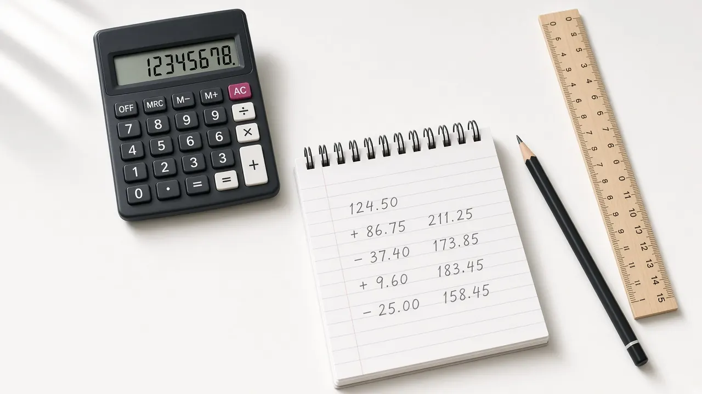

Opportunity cost and comparative advantage calculator
The opportunity cost of one unit of a good is how much of the other good you give up to produce it. If the same resources can make 8 units of cloth or 4 units of wine, the opportunity cost of 1 cloth is 4 divided by 8, which is 0.5 wine, and the opportunity cost of 1 wine is 8 divided by 4, which is 2 cloth. With two producers, comparative advantage belongs to whoever has the lower opportunity cost of a good. Absolute advantage is different. It is simply who can produce more of that good. This page runs both calculations in your browser. It is classroom arithmetic, not a reading of UK or US trade data, and not advice about tariffs or trade deals.

Which calculation
One producer. Enter how much of each good the same unit of resource, or the same amount of time, can produce. The opportunity cost of 1 unit of good A is good B output divided by good A output.
Optional. The EXAMPLE name is cloth. Leave blank and the result says good A.
Optional. The EXAMPLE name is wine. Leave blank and the result says good B. Use the same two goods for both producers.
Optional. The EXAMPLE name is Atelier, a fictional workshop. Leave blank and the result says This producer.
How much of good A the producer can make with one unit of resource, or one unit of time. The EXAMPLE default is 8. Enter a number greater than 0.
How much of good B the same unit of resource can make instead. The EXAMPLE default is 4. Enter a number greater than 0. Zero and negative outputs are not defined in this ratio.
Optional. The EXAMPLE name is Atelier. Leave blank and the result says Producer 1. This is a classroom label, not a country.
Maximum good A if producer 1 puts all resources into good A. The EXAMPLE default is 8. Constant opportunity cost means the frontier between this maximum and the good B maximum is a straight line.
Maximum good B if producer 1 puts all resources into good B. The EXAMPLE default is 4. Enter a number greater than 0.
Optional. The EXAMPLE name is Cellar, a second fictional workshop. Leave blank and the result says Producer 2.
Maximum good A if producer 2 puts all resources into good A. The EXAMPLE default is 6. Enter a number greater than 0.
Maximum good B if producer 2 puts all resources into good B. The EXAMPLE default is 12. Enter a number greater than 0.
Opportunity cost of 1 unit of good A
Opportunity cost of 1 unit of good B
Absolute advantage
Comparative advantage
Terms of trade
Formula with your numbers
How to read this
The EXAMPLE uses two fictional workshops, Atelier and Cellar, and two goods, cloth and wine. These are invented classroom numbers, not statistics for any country. Atelier can produce 8 cloth or 4 wine with the same resources. Cellar can produce 6 cloth or 12 wine. Atelier's opportunity cost of 1 cloth is 0.5 wine. Cellar's opportunity cost of 1 cloth is 2 wine. Atelier has the absolute advantage in cloth. Cellar has the absolute advantage in wine. Atelier has the comparative advantage in cloth. Cellar has the comparative advantage in wine. Both gain if 1 cloth trades for strictly more than 0.5 wine and strictly less than 2 wine. One producer mode opens on Atelier's 8 and 4.
Not investment advice and not trade policy advice. Nothing here says a government should impose a tariff, sign a trade deal, or specialize in a particular industry. A lower opportunity cost in this sketch is not a forecast of exports. The calculator does not fetch live data.
The classroom formula
Opportunity cost of 1 unit of good A = good B output / good A output
Opportunity cost of 1 unit of good B = good A output / good B output
For one producer, use the same unit of resource, or the same amount of time, for both goods. Call good A output Qa and good B output Qb. The opportunity cost of 1 unit of A is Qb divided by Qa, measured in units of B. The opportunity cost of 1 unit of B is Qa divided by Qb, measured in units of A. The two ratios are reciprocals. If 1 cloth costs 0.5 wine, then 1 wine costs 2 cloth.
For two producers with constant opportunity cost, enter the maximum of each good when all resources go to that good. Those two points are the ends of a straight production possibilities frontier. The slope between them is the opportunity cost, and it does not change along that line. A bowed frontier, where the opportunity cost rises as you produce more of a good, is a different sketch. The production possibilities curve explainer draws that bowed curve next to a straight line. This calculator does not fit the bowed case.
Absolute advantage belongs to the producer who can make more of a good with the resources in the table. If the maximums are equal, call it a tie. Comparative advantage belongs to the producer with the lower opportunity cost of that good. If the opportunity costs are equal, neither producer has a comparative advantage in that good. With two goods and positive outputs, comparative advantage splits unless the opportunity costs match. One producer can have the absolute advantage in both goods and still lack the comparative advantage in one of them.
Mutually beneficial terms of trade sit strictly between the two opportunity costs of the good being traded. The producer who specializes in cloth will sell cloth only at a price above what cloth costs them in wine. The other producer will buy cloth only at a price below what cloth would cost them to make. At either endpoint, one side does not gain. When the opportunity costs are equal, there is no range that makes both gain from specialization.
Worked example. Atelier's maximum is 8 cloth or 4 wine. Opportunity cost of 1 cloth equals 4 divided by 8, which is 0.5 wine, or 1/2. Opportunity cost of 1 wine equals 8 divided by 4, which is 2 cloth. Cellar's maximum is 6 cloth or 12 wine. Opportunity cost of 1 cloth equals 12 divided by 6, which is 2 wine. Opportunity cost of 1 wine equals 6 divided by 12, which is 0.5 cloth, or 1/2. Atelier gives up less wine per cloth, so Atelier has the comparative advantage in cloth. Cellar gives up less cloth per wine, so Cellar has the comparative advantage in wine. Both gain if 1 cloth trades for strictly more than 0.5 wine and strictly less than 2 wine. The same range, read the other way, is 1 wine for strictly more than 0.5 cloth and strictly less than 2 cloth.
| Producer | Max cloth | Max wine | Opportunity cost of 1 cloth | Opportunity cost of 1 wine |
|---|---|---|---|---|
| Atelier | 8 | 4 | 0.5 wine | 2 cloth |
| Cellar | 6 | 12 | 2 wine | 0.5 cloth |
A further EXAMPLE shows that absolute advantage and comparative advantage need not point the same way. Suppose Atelier could produce 20 cloth or 20 wine, and Cellar still produced 6 cloth or 12 wine. Atelier would have the absolute advantage in both goods, because 20 is larger than 6 and 20 is larger than 12. Atelier's opportunity cost of 1 wine would be 1 cloth. Cellar's opportunity cost of 1 wine would still be 0.5 cloth. Cellar would keep the comparative advantage in wine. Those figures are still invented classroom arithmetic.
UK and US framing
UK and US courses teach this arithmetic in the first weeks. In the United States, AP Macroeconomics Unit 1 includes opportunity cost and the production possibilities curve, then comparative advantage and gains from trade. Those topic names are course context only. This page is not an official exam question and is not affiliated with the College Board. In the United Kingdom, introductory and A level economics use the same ratios. The labels on this page are classroom names, Atelier and Cellar, cloth and wine. They are not the United Kingdom, the United States, or any other country.
A trade deficit, a tariff, or an exchange rate does not fall out of these ratios. This is classroom arithmetic, not trade policy advice, and not a recommendation about what either country should export. Real trade also reflects scale, supply chains, and policy. For balances and exchange rates, read international trade and the purchasing power parity calculator. For how a price coordinates buyers and sellers inside one market, read supply and demand. The glossary entries for opportunity cost and comparative advantage state the definitions in one line each. Questions about what this site is, and is not, are on the FAQ.
Sources
- College Board: AP Macroeconomics course (Unit 1, Basic Economic Concepts, as course context only)
- College Board: AP Macroeconomics Course and Exam Description (topic 1.2 Opportunity Cost and the Production Possibilities Curve, topic 1.3 Comparative Advantage and Gains from Trade)
- OpenStax: Principles of Economics 3e, 33.1 Absolute and Comparative Advantage
- OpenStax: Principles of Economics 3e, 2.2 The Production Possibilities Frontier and Social Choices
All calculators · Production possibilities curve · International trade · Supply and demand · Opportunity cost · Comparative advantage · Purchasing power parity calculator · FAQ